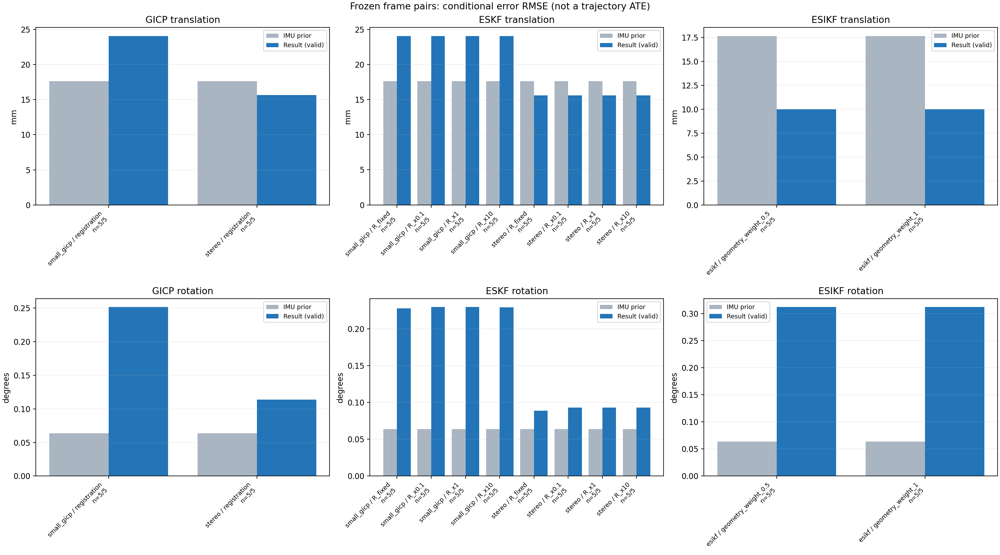

20261015_112845_yaw_left · depth=sgbm · cache=7681d40cd86c496b3106
固定图像对与纯 IMU 先验；ESKF 回放固定 GICP 观测，ESIKF 直接读取点云。真值只用于此报告。
SGBM 调试基线：结果用于检查接口、坐标与融合行为，模型视差替换后需重新评估 GICP 精度和协方差。
误差按每对图像的锚点计算，单位 m / degrees。此处 RMSE 不是全序列 ATE；末帧受同一锚点条件约束。NIS 与条件马氏距离是诊断量，少量相关图像对不能用于宣称协方差已校准。
全部指标 CSV · R / P / K 矩阵 CSV · ESIKF 逐轮 CSV · 配置快照 · 矢量图
| stage | method | variant | valid | total | translation RMSE (m) | rotation RMSE (deg) |
|---|---|---|---|---|---|---|
| esikf | esikf | geometry_weight_0.5 | 5 | 5 | 0.0099719 | 0.31186 |
| esikf | esikf | geometry_weight_1 | 5 | 5 | 0.0099922 | 0.31191 |
| eskf | small_gicp | R_fixed | 5 | 5 | 0.024053 | 0.22806 |
| eskf | small_gicp | R_x0.1 | 5 | 5 | 0.024064 | 0.22968 |
| eskf | small_gicp | R_x1 | 5 | 5 | 0.024062 | 0.22965 |
| eskf | small_gicp | R_x10 | 5 | 5 | 0.024041 | 0.22939 |
| eskf | stereo | R_fixed | 5 | 5 | 0.015606 | 0.088727 |
| eskf | stereo | R_x0.1 | 5 | 5 | 0.015622 | 0.093193 |
| eskf | stereo | R_x1 | 5 | 5 | 0.015622 | 0.093193 |
| eskf | stereo | R_x10 | 5 | 5 | 0.015621 | 0.093187 |
| gicp | small_gicp | registration | 5 | 5 | 0.02408 | 0.25162 |
| gicp | stereo | registration | 5 | 5 | 0.015647 | 0.11407 |

| stage | case | method | variant | status | inliers | converged | prior_trans_error_m | result_trans_error_m | prior_rot_error_deg | result_rot_error_deg | R_rot_trace_rad2 | R_pos_trace_m2 | nis_regularized |
|---|---|---|---|---|---|---|---|---|---|---|---|---|---|
| gicp | static_start | stereo | registration | eligible | 22846 | 1 | 7.8303e-05 | 0.0017812 | 0.0034263 | 0.020316 | 3.9704e-09 | 7.3975e-08 | nan |
| gicp | static_start | small_gicp | registration | eligible | 23002 | 1 | 7.8303e-05 | 0.0045422 | 0.0034263 | 0.081228 | 3.1783e-06 | 4.891e-05 | nan |
| gicp | sync_motion | stereo | registration | eligible | 21548 | 0 | 0.00039414 | 0.01727 | 0.010052 | 0.16092 | 4.3656e-09 | 7.9266e-08 | nan |
| gicp | sync_motion | small_gicp | registration | eligible | 21304 | 1 | 0.00039414 | 0.043594 | 0.010052 | 0.39564 | 4.307e-06 | 6.1942e-05 | nan |
| gicp | main_motion | stereo | registration | eligible | 18329 | 0 | 0.0033198 | 0.012995 | 0.017216 | 0.08337 | 5.5527e-09 | 9.731e-08 | nan |
| gicp | main_motion | small_gicp | registration | eligible | 18150 | 1 | 0.0033198 | 0.029893 | 0.017216 | 0.33692 | 7.168e-06 | 0.00010077 | nan |
| gicp | main_motion_long | stereo | registration | eligible | 14943 | 0 | 0.025379 | 0.024371 | 0.14096 | 0.15618 | 8.7359e-09 | 1.3587e-07 | nan |
| gicp | main_motion_long | small_gicp | registration | eligible | 14488 | 1 | 0.025379 | 0.0062404 | 0.14096 | 0.19796 | 1.1518e-05 | 0.00013669 | nan |
| gicp | static_end | stereo | registration | eligible | 14643 | 0 | 0.03002 | 0.012647 | 0.004953 | 0.086103 | 4.5069e-09 | 9.6728e-08 | nan |
| gicp | static_end | small_gicp | registration | eligible | 14029 | 1 | 0.03002 | 0.0067601 | 0.004953 | 0.027145 | 2.7191e-06 | 5.2511e-05 | nan |
| eskf | static_start | stereo | R_x0.1 | updated | 22846 | 1 | 7.8303e-05 | 0.0017811 | 0.0034263 | 0.020314 | 3.9704e-10 | 7.3975e-09 | 0.00017893 |
| eskf | static_start | stereo | R_x1 | updated | 22846 | 1 | 7.8303e-05 | 0.0017811 | 0.0034263 | 0.020314 | 3.9704e-09 | 7.3975e-08 | 0.00017893 |
| eskf | static_start | stereo | R_x10 | updated | 22846 | 1 | 7.8303e-05 | 0.001781 | 0.0034263 | 0.020314 | 3.9704e-08 | 7.3975e-07 | 0.00017892 |
| eskf | static_start | stereo | R_fixed | updated | 22846 | 1 | 7.8303e-05 | 0.0017443 | 0.0034263 | 0.020203 | 0.00022846 | 0.0012 | 0.00017431 |
| eskf | static_start | small_gicp | R_x0.1 | updated | 23002 | 1 | 7.8303e-05 | 0.0045412 | 0.0034263 | 0.081174 | 3.1783e-07 | 4.891e-06 | 0.0030126 |
| eskf | static_start | small_gicp | R_x1 | updated | 23002 | 1 | 7.8303e-05 | 0.0045351 | 0.0034263 | 0.08114 | 3.1783e-06 | 4.891e-05 | 0.0030077 |
| eskf | static_start | small_gicp | R_x10 | updated | 23002 | 1 | 7.8303e-05 | 0.0044757 | 0.0034263 | 0.080823 | 3.1783e-05 | 0.0004891 | 0.0029595 |
| eskf | static_start | small_gicp | R_fixed | updated | 23002 | 1 | 7.8303e-05 | 0.0043975 | 0.0034263 | 0.077579 | 0.00022846 | 0.0012 | 0.0028568 |
| eskf | sync_motion | stereo | R_x0.1 | updated | 21548 | 0 | 0.00039414 | 0.017267 | 0.010052 | 0.15132 | 4.3656e-10 | 7.9266e-09 | 0.045466 |
| eskf | sync_motion | stereo | R_x1 | updated | 21548 | 0 | 0.00039414 | 0.017267 | 0.010052 | 0.15132 | 4.3656e-09 | 7.9266e-08 | 0.045465 |
| eskf | sync_motion | stereo | R_x10 | updated | 21548 | 0 | 0.00039414 | 0.017267 | 0.010052 | 0.1513 | 4.3656e-08 | 7.9266e-07 | 0.045455 |
| eskf | sync_motion | stereo | R_fixed | updated | 21548 | 0 | 0.00039414 | 0.017211 | 0.010052 | 0.13755 | 0.00022846 | 0.0012 | 0.021198 |
| eskf | sync_motion | small_gicp | R_x0.1 | updated | 21304 | 1 | 0.00039414 | 0.043593 | 0.010052 | 0.39537 | 4.307e-07 | 6.1942e-06 | 0.0058611 |
| eskf | sync_motion | small_gicp | R_x1 | updated | 21304 | 1 | 0.00039414 | 0.043591 | 0.010052 | 0.39538 | 4.307e-06 | 6.1942e-05 | 0.0058482 |
| eskf | sync_motion | small_gicp | R_x10 | updated | 21304 | 1 | 0.00039414 | 0.043572 | 0.010052 | 0.39541 | 4.307e-05 | 0.00061942 | 0.0057468 |
| eskf | sync_motion | small_gicp | R_fixed | updated | 21304 | 1 | 0.00039414 | 0.043578 | 0.010052 | 0.39294 | 0.00022846 | 0.0012 | 0.0055347 |
| eskf | main_motion | stereo | R_x0.1 | updated | 18329 | 0 | 0.0033198 | 0.012986 | 0.017216 | 0.04343 | 5.5527e-10 | 9.731e-09 | 0.00072525 |
| eskf | main_motion | stereo | R_x1 | updated | 18329 | 0 | 0.0033198 | 0.012986 | 0.017216 | 0.04343 | 5.5527e-09 | 9.731e-08 | 0.00072525 |
| eskf | main_motion | stereo | R_x10 | updated | 18329 | 0 | 0.0033198 | 0.012986 | 0.017216 | 0.04343 | 5.5527e-08 | 9.731e-07 | 0.00072525 |
| eskf | main_motion | stereo | R_fixed | updated | 18329 | 0 | 0.0033198 | 0.012984 | 0.017216 | 0.043075 | 0.00022846 | 0.0012 | 0.00070522 |
| eskf | main_motion | small_gicp | R_x0.1 | updated | 18150 | 1 | 0.0033198 | 0.029879 | 0.017216 | 0.27856 | 7.168e-07 | 1.0077e-05 | 0.0038353 |
| eskf | main_motion | small_gicp | R_x1 | updated | 18150 | 1 | 0.0033198 | 0.029875 | 0.017216 | 0.2785 | 7.168e-06 | 0.00010077 | 0.0038332 |
| eskf | main_motion | small_gicp | R_x10 | updated | 18150 | 1 | 0.0033198 | 0.029835 | 0.017216 | 0.2779 | 7.168e-05 | 0.0010077 | 0.0038127 |
| eskf | main_motion | small_gicp | R_fixed | updated | 18150 | 1 | 0.0033198 | 0.029877 | 0.017216 | 0.27694 | 0.00022846 | 0.0012 | 0.0037855 |
| eskf | main_motion_long | stereo | R_x0.1 | updated | 14943 | 0 | 0.025379 | 0.024341 | 0.14096 | 0.13445 | 8.7359e-10 | 1.3587e-08 | 0.0016141 |
| eskf | main_motion_long | stereo | R_x1 | updated | 14943 | 0 | 0.025379 | 0.024341 | 0.14096 | 0.13445 | 8.7359e-09 | 1.3587e-07 | 0.0016141 |
| eskf | main_motion_long | stereo | R_x10 | updated | 14943 | 0 | 0.025379 | 0.024341 | 0.14096 | 0.13445 | 8.7359e-08 | 1.3587e-06 | 0.001614 |
| eskf | main_motion_long | stereo | R_fixed | updated | 14943 | 0 | 0.025379 | 0.024335 | 0.14096 | 0.13425 | 0.00022846 | 0.0012 | 0.0015944 |
| eskf | main_motion_long | small_gicp | R_x0.1 | updated | 14488 | 1 | 0.025379 | 0.0062336 | 0.14096 | 0.1522 | 1.1518e-06 | 1.3669e-05 | 0.0023829 |
| eskf | main_motion_long | small_gicp | R_x1 | updated | 14488 | 1 | 0.025379 | 0.006229 | 0.14096 | 0.15212 | 1.1518e-05 | 0.00013669 | 0.0023814 |
| eskf | main_motion_long | small_gicp | R_x10 | updated | 14488 | 1 | 0.025379 | 0.006185 | 0.14096 | 0.15132 | 0.00011518 | 0.0013669 | 0.0023659 |
| eskf | main_motion_long | small_gicp | R_fixed | updated | 14488 | 1 | 0.025379 | 0.0062329 | 0.14096 | 0.15118 | 0.00022846 | 0.0012 | 0.002358 |
| eskf | static_end | stereo | R_x0.1 | updated | 14643 | 0 | 0.03002 | 0.012558 | 0.004953 | 0.012375 | 4.5069e-10 | 9.6728e-09 | 1.9702e-05 |
| eskf | static_end | stereo | R_x1 | updated | 14643 | 0 | 0.03002 | 0.012558 | 0.004953 | 0.012375 | 4.5069e-09 | 9.6728e-08 | 1.9702e-05 |
| eskf | static_end | stereo | R_x10 | updated | 14643 | 0 | 0.03002 | 0.012558 | 0.004953 | 0.012375 | 4.5069e-08 | 9.6728e-07 | 1.9702e-05 |
| eskf | static_end | stereo | R_fixed | updated | 14643 | 0 | 0.03002 | 0.012558 | 0.004953 | 0.012371 | 0.00022846 | 0.0012 | 1.9697e-05 |
| eskf | static_end | small_gicp | R_x0.1 | updated | 14029 | 1 | 0.03002 | 0.0065483 | 0.004953 | 0.0095935 | 2.7191e-07 | 5.2511e-06 | 8.8574e-06 |
| eskf | static_end | small_gicp | R_x1 | updated | 14029 | 1 | 0.03002 | 0.0065483 | 0.004953 | 0.0095934 | 2.7191e-06 | 5.2511e-05 | 8.8574e-06 |
| eskf | static_end | small_gicp | R_x10 | updated | 14029 | 1 | 0.03002 | 0.006548 | 0.004953 | 0.0095924 | 2.7191e-05 | 0.00052511 | 8.8568e-06 |
| eskf | static_end | small_gicp | R_fixed | updated | 14029 | 1 | 0.03002 | 0.0065478 | 0.004953 | 0.0095918 | 0.00022846 | 0.0012 | 8.8564e-06 |
| esikf | static_start | esikf | geometry_weight_1 | updated | 23168 | 1 | 7.8303e-05 | 0.0029249 | 0.0034263 | 0.027709 | 4.6603e-08 | 8.6048e-07 | nan |
| esikf | static_start | esikf | geometry_weight_0.5 | updated | 23168 | 1 | 7.8303e-05 | 0.0029228 | 0.0034263 | 0.027613 | 9.3161e-08 | 1.7193e-06 | nan |
| esikf | sync_motion | esikf | geometry_weight_1 | updated | 21981 | 1 | 0.00039414 | 0.014432 | 0.010052 | 0.16862 | 5.1851e-08 | 8.8216e-07 | nan |
| esikf | sync_motion | esikf | geometry_weight_0.5 | updated | 21987 | 1 | 0.00039414 | 0.014393 | 0.010052 | 0.16822 | 1.0364e-07 | 1.7623e-06 | nan |
| esikf | main_motion | esikf | geometry_weight_1 | updated | 18457 | 1 | 0.0033198 | 0.0043561 | 0.017216 | 0.14773 | 9.5156e-08 | 9.8593e-07 | nan |
| esikf | main_motion | esikf | geometry_weight_0.5 | updated | 18457 | 1 | 0.0033198 | 0.0043472 | 0.017216 | 0.14775 | 1.9021e-07 | 1.9708e-06 | nan |
| esikf | main_motion_long | esikf | geometry_weight_1 | updated_not_converged | 15020 | 0 | 0.025379 | 0.013345 | 0.14096 | 0.34602 | 1.2124e-07 | 1.167e-06 | nan |
| esikf | main_motion_long | esikf | geometry_weight_0.5 | updated_not_converged | 15013 | 0 | 0.025379 | 0.013339 | 0.14096 | 0.34729 | 2.4264e-07 | 2.3378e-06 | nan |
| esikf | static_end | esikf | geometry_weight_1 | updated | 15080 | 1 | 0.03002 | 0.0092367 | 0.004953 | 0.56187 | 1.1645e-07 | 9.6397e-07 | nan |
| esikf | static_end | esikf | geometry_weight_0.5 | updated | 15085 | 1 | 0.03002 | 0.0091999 | 0.004953 | 0.56104 | 2.3292e-07 | 1.93e-06 | nan |